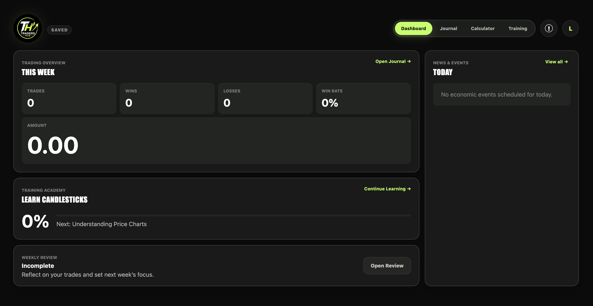
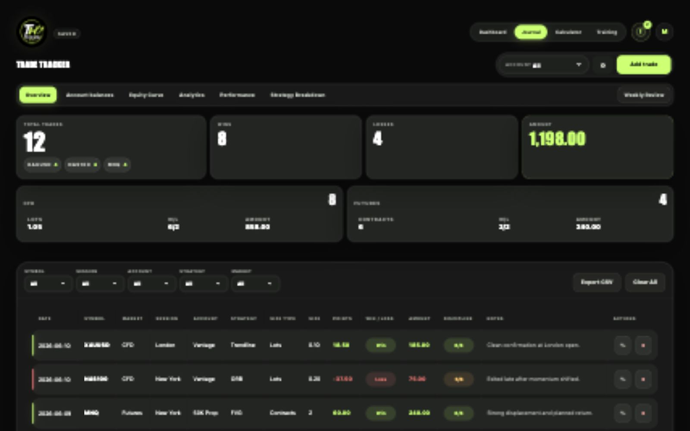
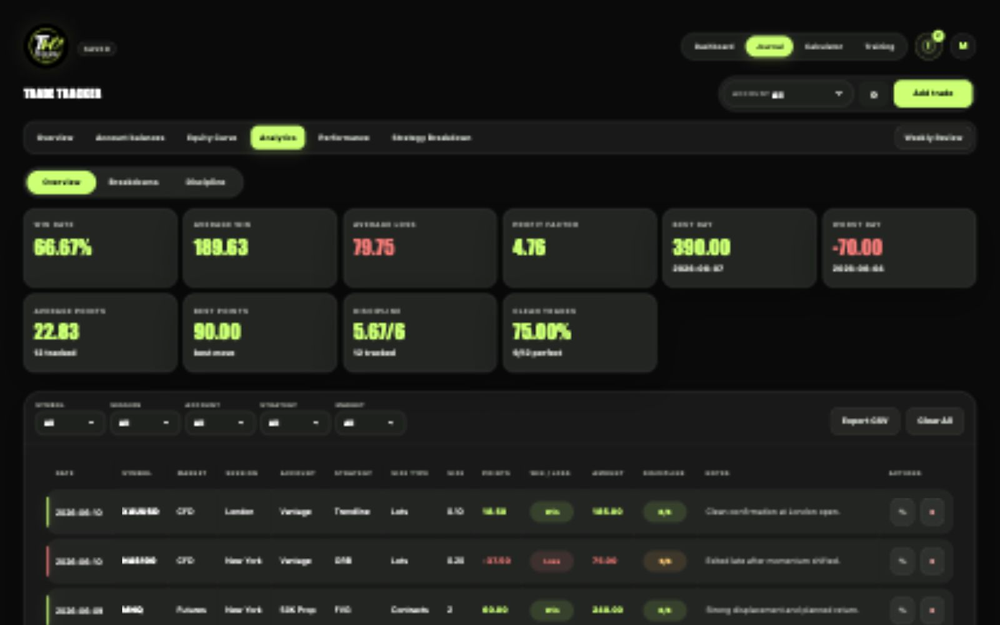
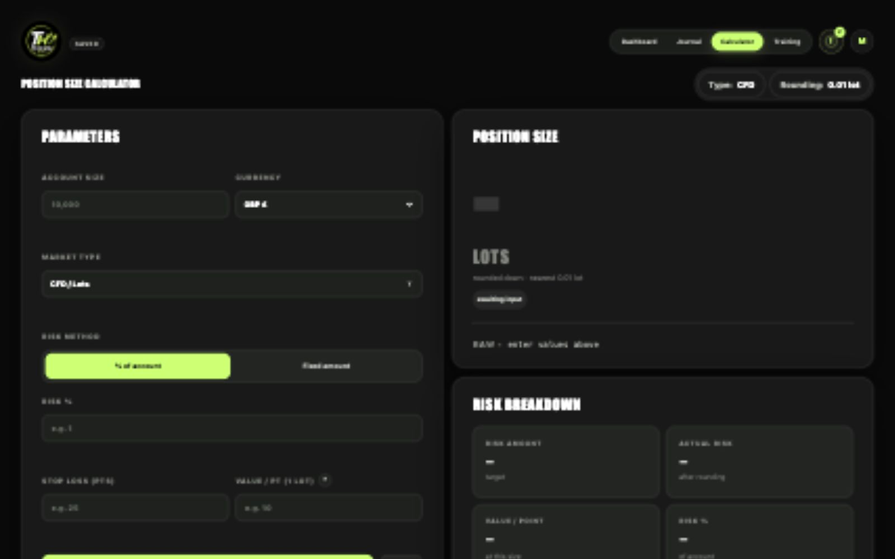
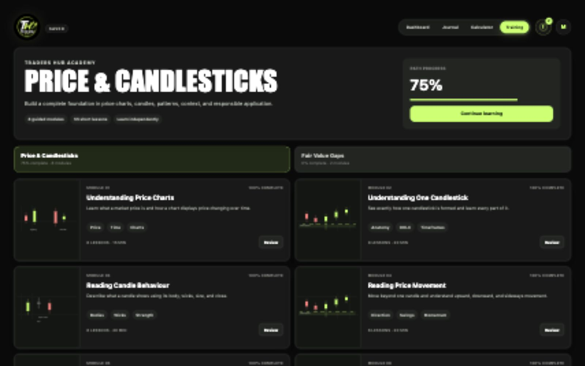

See your real performance
Understand results by account, strategy, symbol, session, and market type instead of relying on memory.
A journal built for better decisions
Traders Hub brings your journal, performance, rules, reviews, market events, and training into one focused workspace.

More than a trade log
Good journaling is not about collecting rows. It is about seeing what is working, catching what is not, and making your next decision with more clarity.
Understand results by account, strategy, symbol, session, and market type instead of relying on memory.
Set personal rules and limits, then receive a warning before emotion turns into another avoidable trade.
Use weekly reviews, discipline insights, and your equity curve to turn trading history into a practical plan.
Learn core trading concepts through interactive lessons, diagrams, and questions without leaving the hub.
From reaction to process
Traders Hub gives your decisions structure before, during, and after every trade.
Explore the product
Move through genuine screens from the live app. Each area is designed to help you make clearer decisions and learn from the evidence.
Your command centre
See this week's performance, today's economic events, training progress, and weekly review status before deciding what needs your attention.
Inside Traders Hub
Track the essentials alongside entry, exit, points, notes, discipline, and whether your personal trading rules were followed.

Move beyond profit and loss with account balances, equity curves, discipline insights, weekly and monthly views, and strategy breakdowns.

Check upcoming economic events, calculate position size, follow your rules, and continue learning through interactive training paths.


More than access to an app
The app gives you the structure. The Skool community gives you a place to keep learning, share progress, and develop alongside traders working on the same habits.
Explore the Skool communityGet your personal passcode and use the complete journal, calculator, training, and review workspace.
Continue developing your understanding and process through the community and interactive training.
Use your journal and weekly reviews to bring clearer questions, evidence, and progress into the community.
A simple rhythm
Add the markets, accounts, strategies, sessions, and rules that matter to you.
Capture each trade and the decisions behind it while the context is still fresh.
Use analytics and weekly reviews to find repeatable strengths and costly habits.
Take the lessons into the next week with a focused plan and clearer boundaries.
Questions answered
Access is provided through The Traders Hub Skool community. You receive a personal passcode that loads your own workspace and saved data.
Your trades, setup, rules, reviews, and training progress are stored against your personal account and are not shared with other users.
Yes. Configure CFDs, futures, or both. The journal and position-size calculator display the correct lots or contracts for each trade.
Yes. The setup wizard guides new users through their workspace, while the training academy starts from basic chart and candlestick concepts.
The site and app are responsive and can be used on mobile, tablet, and desktop. A larger screen remains best for deeper journal reviews and analytics.
No. Traders Hub is a journal, planning, review, calculator, and learning workspace. It does not place or manage live trades.
Ready to build a better trading process?
Traders Hub is available through our Skool community, where you can access the app and continue developing alongside other traders.
Join us on Skool